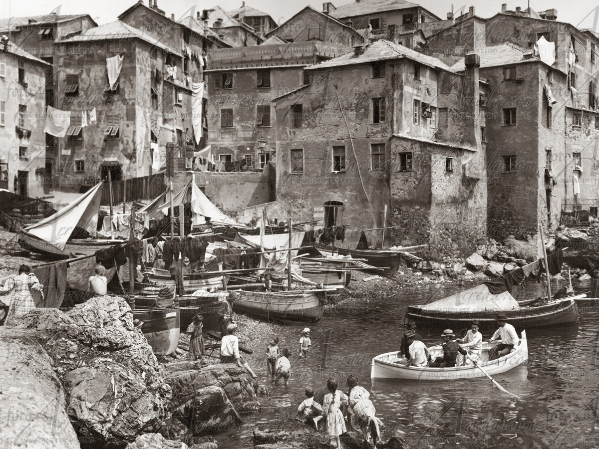
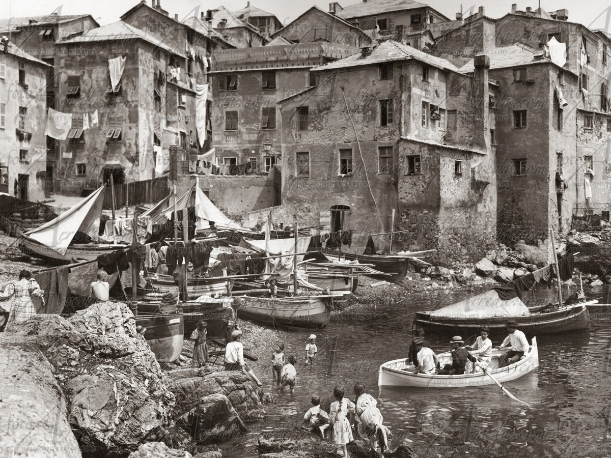

Boccadasse è un piccolo borgo marinaro nel centro della città di Genova di 5 km quadrati che, con la sua particolarissima conformazione, regala un caratteristico colpo d’occhio a chiunque si trovi nelle vicinanze. Secondo una leggenda, il borgo sarebbe stato fondato intorno all’anno mille da un gruppo di pescatori spagnoli che, dopo essere stati in balìa di una terribile tempesta, hanno trovato rifugio proprio in questa insenatura. Inoltre, pare che dal nome del loro capitano (De Odero o Donderos) deriverebbe il cognome Dodero, tuttora diffuso in città. Si narra anche che, dal nome del borgo, sia derivato quello del quartiere di Buenos Aires "la Boca", abitato da immigrati di origine genovese. In origine il borgo faceva parte del Comune di San Francesco d'Albaro, ma nel 1873 è stato accorpato al Comune di Genova. Grazie alla costruzione dell’arteria stradale di Corso Italia nei primissimi anni del ‘900, inoltre, Boccadasse è diventato il punto di ritrovo di moltissime famiglie genovesi dopo la classica passeggiata della domenica pomeriggio. Ad oggi questo bellissimo centro conserva tutto il fascino di un borgo rimasto pressoché invariato da almeno trecento anni, che ha saputo ispirare numerosi artisti, dai più ai meno noti.
 

La leggenda più conosciuta narra che il nome deriverebbe dalla singolare forma della piccola baia che sembra disegnare proprio una bocca d’asino, che nel dialetto della zona si dice “bocca d’aze”.
Secondo un’altra ipotesi, invece, il nome farebbe riferimento al torrente "Asse" che un tempo scorreva dove si trova via Boccadasse e che, dopo aver alimentato lavatoi e fontane, sfociava in mare proprio nel centro del borgo.
Una terza e ultima ipotesi attribuirebbe la denominazione a Guglielmo Boccadassino, antico proprietario della zona.
Edoardo Firpo ha dedicato a questo villaggio la poesia intitolata: Boccadaze
O Boccadaze, quando a ti se chinn-a
sciortindo da-o borboggio da çittae,
s’à l’imprescion de ritorna in ta chinn-a
o de cazze in te brasse d’unna moae.
Pa che deslengue un po’ l’anscia da vitta
sentindo come lì s’eggian fermae
ne-a bella intimitae da to marinn-a
a paxe antiga e a to tranquillitae.
O Boccadasse, quando si scende a te
uscendo dal subbuglio della città,
si ha l’impressione di ritornare nella culla,
o di cadere fra le braccia d’una madre.
Pare che si sciolga un po’ l’ansia della vita
sentendo come lì si sian fermate
nella bella intimità della marina
la tua pace antica e la tranquillità.